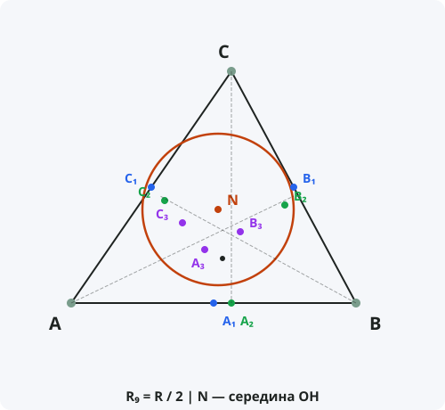

Окружность девяти точек
Формулировка
В любом треугольнике середины сторон, основания высот и середины отрезков от ортоцентра до вершин лежат на одной окружности, называемой окружностью девяти точек (или окружностью Эйлера).
Обозначения
Пусть дан треугольник ABC.
A₁, B₁, C₁ — середины сторон BC, AC, AB.
A₂, B₂, C₂ — основания высот.
A₃, B₃, C₃ — середины отрезков AH, BH, CH, где H — ортоцентр.
N — центр окружности девяти точек.
R₉ — радиус окружности девяти точек.
Тогда: R₉ = R / 2, и N — середина отрезка OH.

Доказательство
Теорема доказана.
Свойства окружности девяти точек
- Радиус: R₉ = R / 2, где R — радиус описанной окружности.
- Центр N: середина отрезка OH, где O — центр описанной окружности, H — ортоцентр.
- Центр N лежит на прямой Эйлера.
- Окружность девяти точек касается вписанной и трёх вневписанных окружностей (теорема Фейербаха).
- Окружность девяти точек проходит через девять замечательных точек.
Девять точек
- Три середины сторон: A₁, B₁, C₁.
- Три основания высот: A₂, B₂, C₂.
- Три середины отрезков от ортоцентра до вершин: A₃, B₃, C₃.
Следствия из теоремы
- В любом треугольнике эти девять точек всегда лежат на одной окружности.
- Радиус окружности девяти точек вдвое меньше радиуса описанной окружности.
- Центр окружности девяти точек лежит на прямой Эйлера.
- Окружность девяти точек — одна из самых удивительных геометрических находок.
Примеры применения
Пример 1. Радиус описанной окружности треугольника равен 10. Найдите радиус окружности девяти точек.
Решение: R₉ = R / 2 = 10 / 2 = 5.
Пример 2. Где находится центр окружности девяти точек в прямоугольном треугольнике?
Решение: В прямоугольном треугольнике ортоцентр H — вершина прямого угла, центр O — середина гипотенузы. Центр N — середина OH — лежит на гипотенузе.
Пример 3. Докажите, что в равностороннем треугольнике окружность девяти точек совпадает со вписанной окружностью.
Решение: В равностороннем треугольнике O = H = G = I, все девять точек лежат на вписанной окружности. R₉ = R/2 = r (для равностороннего R = 2r).
Историческая справка
Окружность девяти точек была открыта независимо несколькими математиками. Карл Вильгельм Фейербах (1800–1834) в 1822 году доказал, что она касается вписанной и вневписанных окружностей (теорема Фейербаха).
Леонард Эйлер в 1765 году доказал, что середины сторон и основания высот лежат на одной окружности. Позже было обнаружено, что на ней лежат и середины отрезков от ортоцентра до вершин.
Окружность девяти точек называют также окружностью Эйлера или окружностью Фейербаха.
Интересные факты
- Окружность девяти точек — одна из самых «населённых» замечательных окружностей в треугольнике.
- На самом деле на ней лежит гораздо больше девяти замечательных точек (точки пересечения с другими линиями).
- Теорема Фейербаха: окружность девяти точек касается вписанной и трёх вневписанных окружностей.
- В равностороннем треугольнике окружность девяти точек совпадает со вписанной.
- Окружность девяти точек используется в доказательствах многих других теорем о треугольнике.